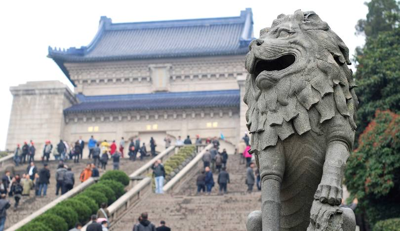

Lao Mendong

Zhongshanling

Lao Mendong is a historic area in Nanjing known for its traditional architecture and vibrant atmosphere. Visitors can explore narrow alleys filled with shops selling local crafts and snacks, making it a perfect place to experience the charm of ancient Nanjing.
Back to TopZhongshanling, or Sun Yat-sen Mausoleum, is a significant site dedicated to Dr. Sun Yat-sen, the founding father of modern China. Surrounded by lush greenery, the mausoleum's impressive architecture draws thousands of visitors each year who come to pay their respects.
Back to Top
Niushoushan is a serene mountain area known for its natural beauty and cultural significance. It features numerous temples and beautiful hiking trails, attracting nature lovers and spiritual seekers alike.
Back to TopTang Bao, or soup dumplings, are a beloved dish in Nanjing. These dumplings are filled with hot soup and savory meat, making them a must-try for anyone visiting the city.
Back to TopDuck Blood Vermicelli Soup is a popular local dish in Nanjing. It is made with a clear broth, duck blood, and vermicelli noodles, offering a rich and satisfying flavor that warms the soul.
Back to TopSalted Duck is a specialty of Nanjing, known for its savory flavor and tender texture. This dish is usually served cold and is a perfect accompaniment to rice or noodles.
Back to Top